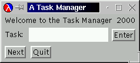
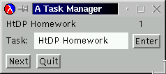
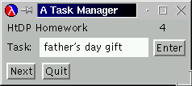

master and master-check
interact with memory. Designing programs with memory requires experience and practice, which, in turn, come from studying examples. In this section we study three more examples of programs that use memory. The first one illustrates the importance of initializers; the second one demonstrates how to design programs whose effects depend on conditions; and the last one shows how effects can be useful in recursive functions. The last two subsections provide opportunities for practicing what we've learned.
Recall the color-guessing game from exercise 5.1.5. One player picks two colors for two squares; we call those ``targets.'' The other one tries to guess which color is assigned to which square; they are guesses. The first player's response to a guess is to compare the colors and to produce one of the following answers:
'perfect!, if the first target is equal to the first
guess and the second target is equal to the second guess;
'OneColorAtCorrectPosition, if the first guess is equal to
the first target or the second guess is equal to the second target;
'OneColorOccurs, if either of the guesses is one of the two
targets;
and 'NothingCorrect, otherwise.
These four answers are the only answers that the first player gives. The second player is to guess the two chosen target colors in as few guesses as possible.
To simplify the game, the choice of colors is limited: see the top of figure 102. Our goal is to develop a program that plays the role of the master player. That is, we want a program that picks the colors and checks the guesses of the second player.
The game description suggests that the program must offer two services: one
for setting up two target colors and another one for checking the
guesses. Naturally, each service corresponds to a function. Let's call the
first master and the second one master-check.
Here is a possible dialogue, based on the two functions:
> (master) > (master-check 'red 'red) 'NothingCorrect > (master-check 'black 'pink) 'OneColorOccurs ...
> (master) > (master-check 'red 'red) 'perfect!
The master function consumes nothing and produces the invisible
value; its effect is to initialize the two targets. Depending on what the
chosen colors are, checking the same two guesses may produce
'perfect! or 'NothingCorrect. In other words,
master sets up some memory that master-check uses.
Let us now study how the design recipe applies to the development of the program. The first step is to define the state variables and to specify the purpose of each variable. Our analysis suggests that we need two state variables, one per target:
;; target1, target2 : color
;; the variables represent the two colors that the first player chooses
(define target1 (first COLORS))
(define target2 (first COLORS))
Both variables are set to the first item from COLORS, so that they
stand for some color.
The second step is to develop an initializer for the two state variables. A
single initializer is enough because the two variables go together. Indeed,
the initializer is the desired master function:
;;master : -> void;; effect: settarget1andtarget2to randomly chosen items inCOLORS(define (master) (begin (set! target1 (list-ref COLORS (random COL#))) (set! target2 (list-ref COLORS (random COL#)))))
The effect comment explains how master changes the two state
variables by picking an item from COLORS based on a random number
between 0 and the length of COLORS.
Finally, we can turn to the functions that modify and utilize the program's
memory. As it turns out, the memory isn't modified after the two target
variables are initialized; it is only used to compare to the two guesses of
the player. The only other service we need is master-check. It
uses check-color, the solution of exercise 5.1.5,
to conduct the comparison. For a summary, see figure 103,
which contains the variable and function definitions that we just
discussed.
|
Exercise 37.1.1.
Draw a diagram that shows how master and master-check
interact with memory.  Solution
Solution
Exercise 37.1.2.
Abstract the repeated expressions in master into the function
random-pick. It consumes a list and chooses a random item from
that list. Then use the function to eliminate the repeated expressions in
master.  Solution
Solution
Exercise 37.1.3.
Modify the color guessing program so that its final answer isn't just
'perfect! but a list of two items: the symbol perfect!
and the number of guesses that the second player made. Start by modifying
the diagram of exercise 37.1.1.  Solution
Solution
Exercise 37.1.4.
Modify the color guessing program so that it automatically restarts the
game when a player has guessed the correct target colors.  Solution
Solution
Exercise 37.1.5.
Develop a graphical user interface, similar to that of the teachpack
master.ss. Instead of colored buttons, use buttons labeled with the
color. Show the current selection in message fields.  Solution
Solution
Recall the hangman game from 6.7. The goal of the game is to test a person's active vocabulary. One player thinks of a word and draws the noose of a gallows; the other player tries to guess the word, one letter at a time. For every wrong guess, the first player adds another part to the drawing (see figure 15): first the head, then the body, the arms, and the legs. If, however, the player's guess reveals new knowledge about the chosen word, the first player indicates where the the letter occurs in the word. The game is over when the second player guesses the complete word or when the first player has completed the stick figure.
|
Figure 104 contains the data definitions for letters,
words, and body-parts. In particular, PARTS not only specifies the
body parts that are drawn, but also the order in which they are drawn. The
figure also defines an incomplete list of words so that the hangman program
can randomly pick a word for us to guess.
The random picking of words occurs at the beginning of the game, which
suggests a random initialization function, similar to that of the
color-guessing program in the preceding section. In contrast to the
latter, the hangman program must also remember the number of guesses that a
player made, because there is only a limited number of them. After
'left-leg is drawn, the game is over. Counting down the number of
body parts also implies that as the program checks each guess, it must
inform the player not only what the guess revealed but also which body
part, if any, was lost.
Let us capture this thought in a data definition that specifies the legitimate class of responses:
"You won"
(list "The End" word)
(list "Good guess!" word)
(list "Sorry" body-part word)
Three of the responses are lists so that the program can provide several pieces of information at once. Specifically, the first response says that filling in the guess turns the status word into the chosen word and that the player survived the game. The second response indicates the opposite; the list of available body parts is exhausted and the game is over because the player did not guess all the letters in the word. In the third case, the player's guess was successful and the second item in the list shows how much the player knows about the word. Finally, the fourth response represents a bad guess, in which case the response is a list of three items: a greeting, the lost body part, and a reminder of what the player has found about the word.
We can now imagine the role of the two services in the hangman
program. The first, called hangman, picks a new word; the second,
called hangman-guess, consumes a letter and produces one of the four
possible responses. Here is a feasible dialogue:
> (hangman) > (hangman-guess 'a) (list "Sorry" 'head (list '_ '_ '_ '_ '_ '_)) > (hangman-guess 'i) (list "Good guess!" (list '_ '_ '_ '_ 'i '_)) > (hangman-guess 's) (list "Good guess!" (list 's '_ '_ '_ 'i '_)) > (hangman-guess 'i) (list "Sorry" 'body (list 's '_ '_ '_ 'i '_)) ... > (hangman) > (hangman-guess 'a) "You won"
The dialogue consists of two rounds of hangman. They show that the results of
hangman-guess depend on the prior use of
hangman. Furthermore, the first round illustrates how
hangman-guess applied to the same guess twice produces two different
answers. This again means that hangman-guess modifies and uses
memory, specifically, it counts down the body parts as the player makes
useless guesses.
|
In addition, the dialogue shows that the player loses a body part whenever a
guess doesn't contribute any new knowledge. Consider the second guess:
'i. It occurs in the penultimate position of the word and the
response of hangman-guess says so. When the player enters
'i again as the fourth guess, hangman-guess detects no
progress because the positions of 'i have already been
revealed. In the informal description of the game, this aspect had been
left open. By putting together an example, we become aware of this
ambiguity and can make a decision.
Thus far, our reasoning has revealed the need for two services and three state variables:
chosen-word, which is the word to be guessed;
status-word, which records how much of the word has been
guessed;
and body-parts-left, which remembers how many and which
imaginary body parts the player can still lose.
The first two variables always stand for words, as their name
says. A natural value for the last one is a list of body parts; indeed, the
list should always be a suffix of PARTS.
Figure 105 contains the definitions of the state variables
and their purpose statements. The first two, chosen-word and
status-word, are set to the first items of WORDS, so that they
represent some word. The third one is set to PARTS because this
list represents the entire collection of available body parts.
Next we must develop an initializer for the state variables. As in the
preceding section, a single initializer suffices. It is the
hangman function, and its purpose is to set up the program's
memory. Specifically, it picks a word for chosen-word, and it sets
status-word and body-parts-left to values that reflect
that the game has just begun. The last one is easy because PARTS
is the appropriate list. The initial value for status-word
requires a short analysis. First, the value must be a word. Second, it must
consist of as many letters as chosen-word. Finally, each of the
letters is unknown, because the player hasn't made any guesses yet. Thus,
the matching action is to build a word as long as chosen-word from
'_.
Exercise 37.2.1.
Develop the function make-status-word, which consumes a word and
produces an equally long word consisting of just '_. Use the
function to complete the definition of hangman in
figure 105.  Solution
Solution
Exercise 37.2.2.
Use build-list to create the status word in a single
expression. Complete the definition of hangman in
figure 105.  Solution
Solution
Now we are ready to deal with the most difficult part: the design of
hangman-guess, a function that uses and modifies the memory. It
consumes a letter and produces an answer, specifically a response,
which depends on how the current value of status-word,
chosen-word, and guess compare. At the same time, the
function must affect the state variable status-word if the
player's guess added new knowledge. If not, the function must shorten
body-parts-left, the list of available body parts. The matching
contract, purpose, and effect statements are as follows:
;;hangman-guess : letter -> response;; to determine whether the player has won, lost, or may continue to ;; play and, if no progress was made, which body part was lost ;; effect: ;; (1) if the guess represents progress, updatestatus-word;; (2) if not, shorten thebody-parts-leftby one
We have already considered a sample dialogue that illustrates the workings
of hangman-guess. By dissecting this dialogue, we can develop
specific examples for hangman-guess.
The sample dialogue and the purpose/effect statements imply that
the result of hangman-guess depends on whether or not the guess
constitutes progress and, if not, whether or not the guess was the last
one. Let's use these distinctions for the development of examples:
If status-word is (list 'b '_ '_ '_) and
chosen-word is (list 'b 'a 'l 'l), then evaluating
(hangman-guess 'l)
produces (list "Good guess!" (list 'b '_ 'l 'l)) and
status-word becomes (list 'b '_ 'l 'l).
If status-word is (list 'b '_ 'l 'l) and
chosen-word is (list 'b 'a 'l 'l), then evaluating
(hangman-guess 'a)
produces "You won". The evaluation has no effect in this case.
If status-word is (list 'b '_ 'l 'l),
chosen-word is (list 'b 'a 'l 'l), and
body-parts-left is (list 'right-leg 'left-leg),
then evaluating
(hangman-guess 'l)
produces (list "Sorry" 'right-leg (list 'b '_ 'l 'l)) and
body-parts-left becomes (list 'left-leg).
Finally, if status-word is (list 'b '_ 'l 'l),
chosen-word is (list 'b 'a 'l 'l), and
body-parts-left is (list 'left-leg),
then evaluating
(hangman-guess 'l)
produces (list "The End" (list 'b 'a 'l 'l)) and
body-parts-left becomes empty.
The first two examples illustrate what happens when the player enters a guess that reveals new information; the last two focus on those cases where the guess contributes nothing.
The case split naturally suggests a basic template based on a distinction between the possible situations:
(define (hangman-guess guess) (cond [... ;;guessdid reveal new information: (cond [... ;; guess completed the search for the word ...] [... ;; guess did not complete the search for the word (begin (set! status-word ...) ...)])] [... ;;guessdid not reveal any new information: (begin (set! body-parts-left ...) ... )]))
The location of the set!-expressions in the template's nested
conds specify exactly under which conditions effects happen.
First, the outermost conditional distinguishes whether or not
guess produces new knowledge about the hidden word; if it
doesn't, the function must modify body-parts-left. Second, if
guess reveals new knowledge, the function updates the
status-word variable unless the player has just finished the
entire word.
Because we haven't considered yet how to express these tests, we use
comments to indicate what the conditions are. Let us turn to this problem
first, so that we can start the function-definition step with a
full-fledged template. The first missing condition concerns the question
whether guess reveals new information. To this end, we must
compare guess with the letters in chosen-word. This
comparison should produce the new status word. Here is the specification
for the auxiliary function that conducts this computation:
;;reveal-list : word word letter -> word;; to compute the new status word fromchosen-word, ;;status-word, andguess(define (reveal-list chosen-word status-word guess) ...)
Fortunately, we have discussed this auxiliary function twice before (see
sections 6.7 and exercise 17.6.2) and know how to
define it; figure 106 contains a suitable
definition. Using reveal-list, we can now formulate a condition that
determines whether guess reveals new knowledge:
(equal? status-word (reveal-list status-word chosen-word guess))
The condition uses equal? to compare the current value of
status-word with its new value, as computed by
reveal-list. If the two lists are equal, guess doesn't
produce new knowledge; otherwise it does.
The second missing condition concerns the question whether the given guess
completes the search for the word. If guess is equal to all missing
letters in status-word, then the player has found the complete
word. Here is the corresponding condition:
(equal? chosen-word (reveal-list status-word chosen-word guess))
That is, the game is over if chosen-word is equal to the result of
reveal-list.
Let's put everything together in a single template:
(define (hangman-guess guess) (local ((define new-status (reveal-list status-word chosen-word guess))) (cond [(equal? new-status status-word) (begin (set! body-parts-left ...) ... )] [else (cond [(equal? new-status chosen-word) ...] [else (begin (set! status-word ...) ...)])])))
The template uses a local-expression because the result of reveal-list
is used twice. Also, the two outer cond-clauses are swapped
because it is more natural to write (equal? new-status
status-word) than its negation. We can now turn to the function-design
step.
Because the template is conditional, we develop each clause separately:
Assume that (equal? new-status status-word) evaluates to
true, that is, the player made no progress. This implies that the
player loses an imaginary body part. To capture this effect, the
set!-expression must change the value of
body-parts-left. Specifically, it must set the state variable to the
rest of its current value:
(set! body-parts-left (rest body-parts-left))
The answer depends on the new value of body-parts-left. If it is
empty, the game is over; the appropriate response is
(list "The End" chosen-word) so that the player finds out what
the chosen word was. If body-parts-left is not empty, the
response is (list "Sorry" ??? status-word). The response says
that guess is useless. Its last part is the current value of
status-word so that the player sees what he has discovered. The
??? indicates a problem. To understand the problem, take a look
at what we have:
(begin (set! body-parts-left (rest body-parts-left)) (cond [(empty? body-parts-left) (list "The End" chosen-word)] [else (list "Sorry" ??? status-word)]))
In principle, the question marks should be the body part that the player
just lost to the gallows. But, because set! modifies
body-parts-left, we can no longer just say (first
body-parts-left). As mentioned in section 35.2, when
programming with set! timing matters. We can solve the problem
with a local-expression that names the first item on
body-parts-left before the state variable is modified.
The second case is much simpler than the first. We distinguish two subcases:
If new-status is equal to chosen-word, the player has
won. The response is "You won"; there is no effect.
If the two are not equal, the player made some progress and must be
told. Furthermore, the function must keep track of the progress; a
(set! status-word new-status) accomplishes this effect.
The response consists of an encouragement and the new status.
Figure 106 contains the complete definition of
hangman-guess.
|
Exercise 37.2.3.
Draw a diagram that shows how hangman and hangman-guess
interact with the state variables.  Solution
Solution
Exercise 37.2.4.
Formulate the four examples for hangman-guess as boolean-valued
expressions that produce true if hangman-guess is
correct. Develop an additional example for each case; turn these new
examples into additional tests.  Solution
Solution
Exercise 37.2.5.
Develop a graphical user interface, similar to that of the teachpack
hangman.ss. Connect the functions in this section as
call-backs.  Solution
Solution
Exercise 37.2.6.
Modify the program so that it keeps track of all the guesses. Then, if a
player enters the same guess twice for the same round of a hangman game,
the response of hangman-guess is "You have used this guess
before."  Solution
Solution
Exercise 37.2.7.
Consider the following variant of reveal-list!:
;;reveal-list! : letter -> void;; effect: to modifystatus-wordbased on a comparison ofchosen-word, ;; thestatus-word, and the player'sguess(define (reveal-list! cw sw guess) (local ((define (reveal-one chosen-letter status-letter) (cond [(symbol=? chosen-letter guess) guess] [else status-letter]))) (set! status-word (map reveal-one cw sw))))
It changes the state variable status-word to a value that is computed
from the old value of status-word, chosen-word, and the
guess.
Modify hangman-guess so that it works properly with the
reveal-list! function.  Solution
Solution
Functions that affect the memory of a program may not only process simple forms
of data but also arbitrarily large pieces of data. To understand how this works,
let us take a closer look at the purpose of reveal-list from the
hangman game program.
As we have just seen, the function compares guess with each letter
in chosen-word. If it is the same, guess may uncover new
knowledge and is included at the appropriate position in the word;
otherwise, the corresponding letter from status-word represents
what the player knows.
The hangman-guess function then compares the result of
reveal-list with the old value of status-word to find out
whether the player uncovered new knowledge. Furthermore, the result is
compared with chosen-word again if the player found new knowledge,
because guess might have matched all remaining unknown
letters. Clearly, both of these comparisons repeat the computations of
reveal-one. The problem is that the result of reveal-one
is useful to reveal-list and that the result of its individual
comparisons are useful in the conditionals of hangman-guess.
We can solve the first part of the problem with the use of an additional
piece of memory: a state variable that records whether reveal-one
uncovers a letter. The state variable, let's call it
new-knowledge, is modified by reveal-one if it determines
that guess uncovers a currently hidden letter in
chosen-word. The hangman-guess function can use
new-knowledge to find out what reveal-one discovered.
Let us now translate our idea into new program definitions systematically. First, we need to specify the state variable and its meaning:
;;new-knowledge : boolean;; the variable represents whether the most recent application of ;;reveal-listhas provided the player with new knowledge (define new-knowledge false)
Second, we must consider what it means to initialize the new state
variable. From what we know, the state variable is used every time
reveal-list is applied to guess. When the application
starts, the state variable should be false; it should change to
true if guess is useful. This suggests that
new-knowledge is to be initialized to false every time
reveal-list is applied. We can achieve this reinitialization by
changing reveal-list so that it sets the state variable before it
computes anything else:
;;reveal-list : word word letter -> word;; to compute the new status word ;; effect: to setnew-knowledgetofalsefirst (define (reveal-list chosen-word status-word guess) (local ((define (reveal-one chosen-letter status-letter) ...)) (begin(set! new-knowledge false)(map reveal-one chosen-word status-word))))
The underlined expression is the essential modification. The local
expression defines the auxiliary function reveal-one and then
evaluates the local's body. The first step of the body is to
initialize new-knowledge.
Third, we must develop the program that modifies new-knowledge. Here
the program already exists: reveal-list, so our task is to modify it
in such a way that it changes the state variable appropriately. Let's describe
the idea with a modified effect statement:
;;reveal-list : word word letter -> word;; to compute the new status word ;; effect: ;; (1) to setnew-knowledgetofalsefirst ;; (2) to setnew-knowledgetotrueifguessreveals new knowledge
The first part of the effect is necessary for the second one; an experienced programmer may drop it.
Next we should modify the examples for the function to illustrate what kind
of effects happen. The purpose of the function is to compute the new status
word by checking whether guess occurs in the
chosen-word. There are two basic situations depending on whether
guess reveals new knowledge or not:
If status-word is (list 'b '_ 'l 'l) and
chosen-word is (list 'b 'a 'l 'l), then evaluating
(reveal-one chosen-word status-word 'a)
produces (list 'b 'a 'l 'l) and new-knowledge is true.
If status-word is (list 'b '_ '_ '_) and
chosen-word is (list 'b 'a 'l 'l), then evaluating
(reveal-one chosen-word status-word 'x)
produces (list 'b '_ '_ '_) and new-knowledge is false.
If status-word is (list 'b '_ '_ '_) and
chosen-word is (list 'b 'a 'l 'l), then evaluating
(reveal-one chosen-word status-word 'l)
produces (list 'b '_ 'l 'l) and new-knowledge is true.
Finally, if status-word is (list 'b '_ 'l 'l) and
chosen-word is (list 'b 'a 'l 'l), then evaluating
(reveal-one chosen-word status-word 'l)
produces (list 'b '_ 'l 'l) and new-knowledge is false.
The first two examples cover the basic situations; the third one shows that
if guess reveals several new positions in the word,
new-knowledge also becomes true; and the last shows how
guessing a letter that has been uncovered before means no new knowledge has
been added.
|
Given that we already have a function, we can skip the template step and
instead focus on the question of what we need to change in the existing
function. The given version of reveal-list maps reveal-one
over the two words, which are lists of letters. It is reveal-one
that compares guess with the letters in chosen-word and
that determines whether the player has uncovered new knowledge. Hence we
must modify the auxiliary function so that it recognizes when guess
represents new knowledge and to set new-knowledge to true in that
case.
As it is currently defined, reveal-one merely compares
guess with the letters in chosen-word. It does not check
whether the player discovers truly new knowledge if guess and
chosen-letter are the same. The letter guess, however,
represents new knowledge only if the matching letter in the status word
is still '_. This suggests the two modifications shown in
figure 107. That is, reveal-one changes the
value of new-knowledge if, and only if, both (symbol=?
chosen-letter guess) and (symbol=? status-letter '_) are true.
In summary, we can use state variables if we wish to communicate several results from one computation to distant places. For such cases, the interface of a function is under our control but we choose to design it such that the function has both a result and an effect. The proper way to achieve these combinations is to develop the computations separately and to merge them later, if necessary.
Exercise 37.3.1.
Draw a diagram that shows how hangman, hangman-guess, and
reveal-list interact with the state
variables.  Solution
Solution
Exercise 37.3.2.
Turn the three examples into tests, that is, boolean-valued expressions, and test
the new version of reveal-list. How many times does
reveal-one modify new-knowledge for the third test
case?  Solution
Solution
Exercise 37.3.3.
Modify hangman-guess in the hangman program to take advantage of the
additional information that reveal-list provides through
new-knowledge.  Solution
Solution
Exercise 37.3.4.
Modify the hangman program a second time to eliminate the second
equal? in hangman-guess. Hint: Introduce a state variable
that counts how many letters the player doesn't know yet.  Solution
Solution
Let us study a second example of a function that consumes an arbitrarily large piece of data and modifies the program's memory. The example is a natural extension of the traffic light simulator in section 36. We developed two functions:
;;init-traffic-light : -> void;; effects: (1) to initializecurrent-color; (2) to draw traffic light
and
;;next : -> void;; effects: (1) to changecurrent-colorfrom'greento'yellow, ;;'yellowto'red, and'redto'green;; (2) to redraw the traffic light appropriately
The first one starts the process; with the second one, we can repeatedly
switch the state of the light by evaluating (next) in the
Interactions
window.
Typing in (next) over and over again is tiring, so it is natural
to wonder how to write a program that switches the state of the traffic
light 100 or 1000 or 10000 times. In other words, we should develop a
program -- let's call it switch -- that consumes a natural number
and that switches the light from one color to another that many times.
The function consumes a natural number and produces (void), after it
succeeds in switching the traffic light a sufficient number of times. By
now we can immediately write down all the basics, including the template,
for a function that consumes a natural number:
;;switch : N -> void;; purpose: it computes nothing of interest ;; effect: switch the traffic lightntimes, ;; holding each color for three seconds (define (switch n) (cond [(zero? n) ...] [else ... (switch (- n 1)) ...]))
The template is that of a conventional, structurally recursive function.
Making up an example is also straightforward. If we evaluate (switch
4), we wish to see a change from 'red to 'yellow,
'green, and 'red again, with each stage visible for three
seconds.
Defining the full function based on the template is straightforward. We
proceed by cases. If n is 0, the answer is
(void). Otherwise, we know that
(switch (- n 1))
simulates all the necessary switching actions but one. To accomplish this
one additional switch, the function must use (next) to perform all
the state changes and the change of canvas and must wait three seconds. If
we put everything together in a begin-expression, things happen in
the right order:
(begin (sleep-for-a-while 3) (next) (switch (- n 1)))
The top of figure 108 is the complete definition for
switch.
|
An alternative is to switch the traffic light forever or at least until it breaks because of some external event. In this case, the simulator does not consume any argument and, when applied, runs forever. This is the simplest form of generative recursion we can possibly encounter:
;;switch-forever : -> void;; effect: switch the traffic light forever, ;; holding each color for3seconds (define (switch-forever) ... (switch-forever))
Because the program does not terminate under any conditions, the template contains only one recursive call. This suffices to construct an eternally looping function.
Using this template, we can define the complete function as before. Before
recurring, the function must sleep and switch the light with next.
We can accomplish this with a begin-expression, as shown in the
bottom definition of figure 108.
In summary, when we must develop recursive functions that modify the
program's memory, we choose the design recipe that best matches our
situation and proceed accordingly. In particular, if the function has both
an interesting purpose and an effect, as for example reveal-list,
we should first develop the pure function and then add the effects later.
Exercise 37.3.5. In section 30.2, we discussed how to search for routes in simple graphs. The Scheme representation of a simple graph is a list of pairs (of symbols). The pairs specify the direct connections between the nodes in the graph. Each node is the beginning of exactly one connection, but may be the end of several such connections or none. Given two nodes in a simple graph, the problem is to find out whether one can go from the first to the second.
Recall our first attempt at a function that determines whether the route exists (see also figure 86):
;;route-exists? : node node simple-graph -> boolean;; to determine whether there is a route fromorigtodestinsg;; generative recursion (define (route-exists? orig dest sg) (cond [(symbol=? orig dest) true] [else (route-exists? (neighbor orig sg) dest sg)]))
The function checks whether the origination and destination nodes are the same. If not, it generates a new problem by looking up the neighbor of the origination node in the graph.
On occasion, route-exists? fails to produce an answer if the graph
contains a cycle. In section 30.2 we solved the
problem with an accumulator. It is also possible to solve it with a state
variable that keeps track of the origination nodes that
route-exists? has visited for one particular attempt. Modify the
function appropriately.  Solution
Solution
Exercise 37.3.6.
In section 16.2, we developed several simple models of
a computer's file system. Develop the function dir-listing, which
consumes a directory and produces a list of all file names in the directory
and all of its subdirectories. The function also sets the state variable
how-many-directories to the number of subdirectories it encounters
during the process.  Solution
Solution
Exercise 37.4.1.
Modify check-guess-for-list from exercise 9.5.5 so that
it also counts how many times the player has clicked on the ``Check''
button of the interface. Hint: The call-back function for the button uses
check-guess-for-list once per click.  Solution
Solution
Exercise 37.4.2. Develop a program that manages a task queue. The program should support at least four services:
enter, which adds a task to end of the queue;
next, which determines the next task in the queue, if any;
remove, which removes the first task from the queue, if any;
and count, which computes the number of items in the queue.
A user should start the task manager with start-task-manager.
After the program is developed and tested, use gui.ss to develop a graphical user interface to the task manager. The interface should start up with a friendly message and should always display the first task in the queue and the number of items in the queue:
|  |  |  |
Unless the queue is empty, clicking the ``Next'' button should remove an item from the queue and display the first item in the remainder of the queue. If the queue is empty, clicking the ``Next'' button should have no effect.
Hint: The greeting and the year are two separate message items.  Solution
Solution
Exercise 37.4.3.
In section 10.3, we developed a program that moves pictures
across a canvas. A picture is a list of shapes; the program consists of
functions that draws, erases, and translates pictures. The main function is
move (exercise 10.3.6). It consumes a picture and a
number n. It produces a new picture, moved by n pixels;
it also erases the original picture and draws the new one.
Develop the program drive. It draws a (fixed) picture on a canvas
and permits players to move the picture left or right by a player-specified
number of pixels.
Modify drive so that it also keeps track of some given amount of
fuel. A move by one pixel should consume a fixed amount of
fuel.  Solution
Solution
Exercise 37.4.4.
Modify the two functions that control the state of a single traffic light
so that they control the state of the two traffic lights at an ordinary
intersection. Each light can assume one of three states: 'red,
'green, and 'yellow. When one is 'green or
'yellow, the other one must be 'red.
Recall the basics about the two functions for a single traffic light:
;;init-traffic-light : -> void;; effects: (1) to initializecurrent-color; (2) to draw traffic light
and
;;next : -> void;; effects: (1) to changecurrent-colorfrom'greento'yellow, ;;'yellowto'red, and'redto'green;; (2) to redraw the traffic light appropriately
Modify the basics first.
When the program is developed and tested, develop a graphical display like the following:
Use the functions init-traffic-light and next
to drive the display, but keep the functions that display information
separate from these two functions.  Solution
Solution
Exercise 37.4.5. In sections 14.4 and 17.7 we developed an evaluator for a portion of Scheme. A typical Scheme implementation also provides an INTERACTIVE user interface. In DrScheme, the Interactions window plays this role.
An interactive system prompts the reader for definitions and expressions,
evaluates them appropriately, and possibly produces some result.
Definitions are added to some repository; to confirm the addition, the
interactive system may produce a value like true. Expressions are
evaluated relative to the definition repository. The function
interpret-with-defs from section 17.7 performs
this role.
Develop an interaction system around interpret-with-defs. The
system should provide at least two services:
add-definition, which adds (the representation of) some
function definition to the system's repository;
evaluate, which consumes (the representation of) some
expression and evaluates it relative to the current repository.
If a user adds two (or more) definitions for some function f, the
last addition is the one that matters. The previous ones can be
ignored.  Solution
Solution
|
Early computer games asked players to find their way through dangerous mazes and caves. The player wanders from cave to cave, finds treasures, encounters creatures of all kinds, fights, kisses, picks up energy, and eventually reaches paradise. This section lays out the basics of such a game, using our iterative approach to program design.
Our tour takes place at one of the scariest places of all: campus. A campus consists of buildings, some more dangerous than others. Each building has a name and is connected to a group of other buildings.
The player is always in a building. We refer to this building as the
current location.
To find out more about the location, the player can
ask for a picture of the building and for the list of connections. The
player can also move to one of the connected buildings by issuing a
go command.
Exercise 37.5.1. Provide structure and data definitions for buildings. Include a picture field in the structure.
A campus is a list of buildings. Define a sample campus. See
figure 109 for a small example.  Solution
Solution
Exercise 37.5.2. Develop a program that permits a player to move through the sample campus of exercise 37.5.1. The program should support at least three services:
show-me, which produces the picture of the current location:
see figure 110;
where-to-go, which produces the list of connected buildings;
go, which changes the current location of the player.
If the player issues the command (go s) and s is not
connected to the current location, the function must report an error.
Develop other functions as necessary or as
desired.  Solution
Solution
Players of early maze games could also gather objects and trade objects at the various sites. Specifically, the player had a bag for carrying objects, and each site contained objects that the player could trade for things in the bag.
Exercise 37.5.3. Modify the tour program so that each building contains one object. Furthermore, the player should have a bag that contains (at most) one object. At each location, the player can pick up an object, if the bag is empty, or swap the object in the bag for the object in the building otherwise.
Modify the program further so that the player can carry an arbitrary number
of objects in the bag.  Solution
Solution
The three exercises in this section illustrate how maze games work. From here it is easy to experiment with various flavors of the game. Taking a walk from one building to another may take some energy, and the player may have only a finite amount of energy. Creatures may fight or kiss the player, which consumes or replenishes the player's energy level. Use your imagination to extend the game and have friends take the tour.